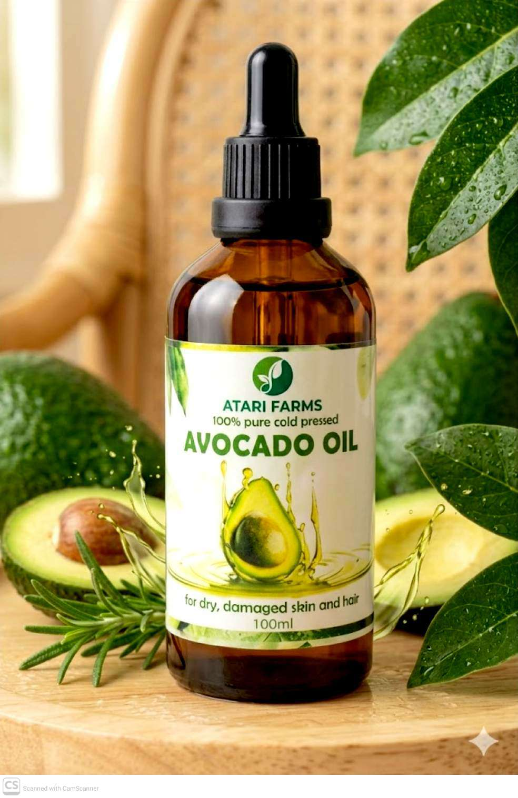
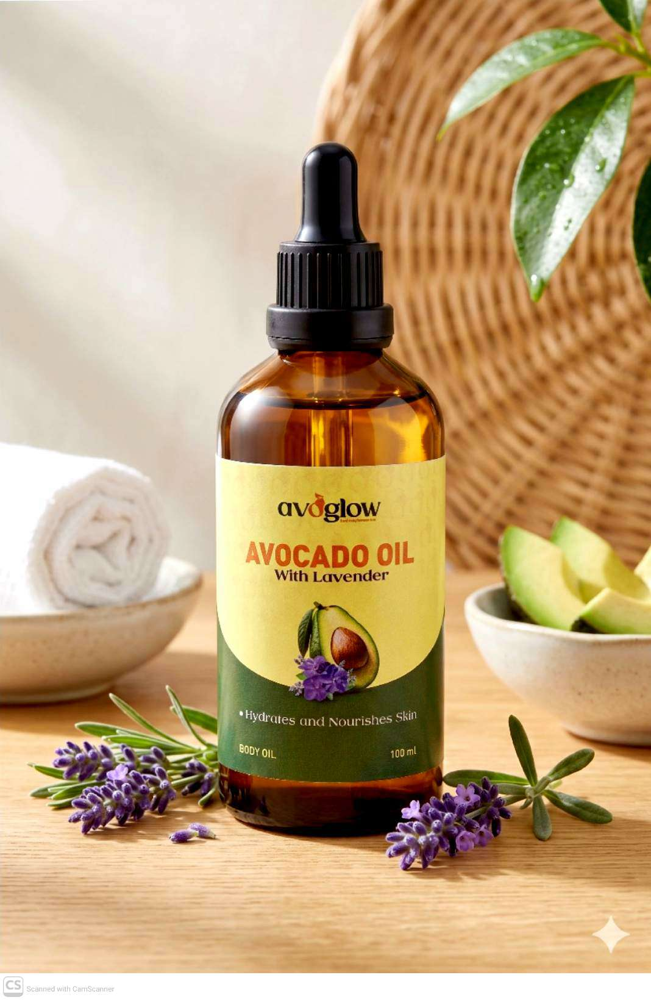

01 / About Atari Farms & Avoglow
Rooted in nature.
Built for people.
Founded in 2019, Atari Farms is a Ugandan climate-smart agribusiness supporting 1,500 smallholder farmers through aggregation, processing, market linkage and circular value addition.
1,500Smallholder farmers
2Core brands
6Student innovators
Avoglow flagship
Value beyond the fruit.
Avoglow is Atari Farms’ flagship value-addition and circular innovation arm. It transforms avocados and avocado by-products into high-quality natural cosmetic oils, hair care and circular wellness products. By recovering value from surplus fruit, seeds and other by-products, Avoglow reduces waste, creates new income streams and demonstrates how African agribusiness can compete sustainably.

